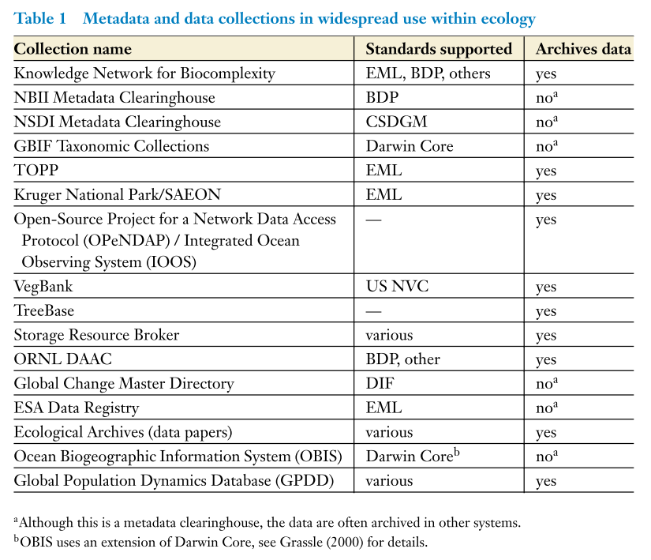
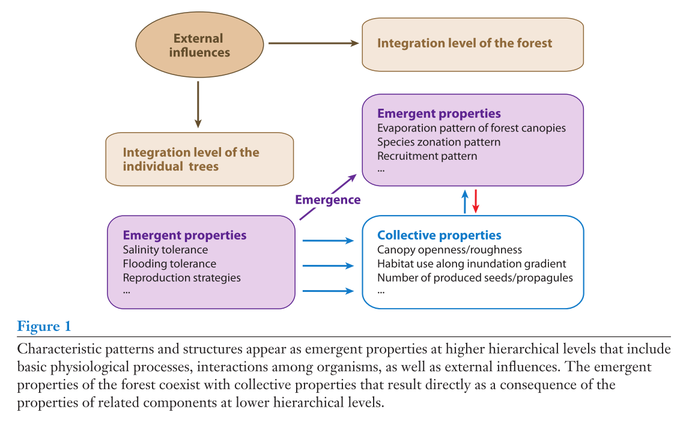
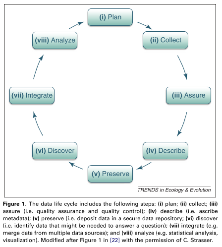

6.1 Ecoinformatics
6.1.1 Michener et al, 2001
“Defining and unraveling biocomplexity” (Michener et al. 2001)
Key contribution: This study’s primary contribution to the literature is a formal definition of biocomplexity, and an investigation of its emergence within the scientific disciplines. The article primarily discusses:
- Defining biocomplexity
- Examining the characteristics of biocomplexity
- Speculating on the future of biocomplexity
Biocomplexity - “properties emerging from the interplay of behavioral, biological, chemical, physical, and social interactions that affect, sustain, or are modified by living organisms, including humans,” as defined by (Michener et al. 2001)
Key notes:
- Biocomplexity exists in contrast to the Popperian type of reductionalist science (causality & falsification), and recognizes that reduced causal mechanisms often are not robust within real-world situations
- “myriad confounding factors operating at different temporal and spatial scales”
- Two features of “biocomplexity”
- biocomplexity occurs as temporal, spatial and conceptual boundaries are broken-down and worked across
- emergent & unexpected properties may (or likely will) arise in response to biocomplexity
Characteristics of “biocomplexity”:
- Relevant for a wide range of organisms; from microbial to megafauna (including humans)
- Relevant for a wide range of environments
- Reflected in nonlinear, chaotic, or unpredictable behaviors – which likely necessitates sophisticated and innovative quantitative procedures
- Likely to span many hierarchical levels as well as across multiples scales in time and space
Key research trajectories for ecology (as posed by Thompson 2001):
- “Dynamics of coalescence in complex communities” - how do environmental constraints and species availability result in current complex ecological communities
- “Ecological memory” - how do past events & conditions influence current ecological structure and conditions
- “Emergent properties” - examining whether the first principles of “hard” sciences can predict composition, structure & function
- “Ecological topology” - identifying “rules” that occur over different scales of time and space, and examining how they interact to produce ecosystems
Further reading:
- (Thompson et al. 2001) - Frontiers of ecology: As ecological research enters a new era of collaboration, integration, and technological sophistication, four frontiers (listed above) seem paramount for understanding how biological and physical processes interact over multiple spatial and temporal scales to shape the Earth’s biodiversity
6.1.2 Jones et al, 2006
“The new bioinformatics: Integrating ecological data from the gene to the biosphere” (Jones et al. 2006)
Key contribution: This paper makes the case for “locating, accessing and integrating” data within ecology. They provide examples of the successes associated with doing so in alternative fields (genetics), and make a case for the need within ecology. They also outline vertically integrated databases (data warehouses) versus metadata-driven databases (data collections), and the relative pros/cons of the two.
Examples of metadata and data collections in ecology:

Key notes: Some relevant points from the article:
A focus on “experimental” design and testing of multiple hypotheses makes ecological data inherently heterogeneous.
Ecoinformatics importance is housed in ability to “allow a broader perspective over time and space, and across many disciplines, than is possible from on or a few studies,” and in allowing data to be reused for questions that may emerge in the future (thus may fit well with “biocomplex” framework).
Current standard for storing of data is in heterogeneous spreadsheets, which are termed “data islands”.
The response of ecoinformatics to resolving issues related to data islands are largely:
- Data warehouses (vertically-integrated) - databases that coalesce data from many investigators, but focus on one theme and are searchable often through an online interface
- Often represents a “least-common denominator” approach in that they are less complex than original dataset
- Examples: GenBank, VegBank or TreeBase
- Data collections (metadata-driven) - collection of datasets that are loosely structured together by well-crafted metadata. Some advantages are:
- Data of disparate types can be housed within a single location
- Focuses on project-level data and thus is familiar to researchers
- Metadata often more detailed
- Metadata often more precise and thus can be used in search functions
- Metadata standards - “consistent and rigorous sets of definitions for metadata categories that are broadly adopted by a research community.” Several examples exist within ecology:
- Ecological Metadata Language (EML)
- Biological Data Profile (BDP)
- Geographic Markup Language (GML)
- Knowledge Network for Biocomplexity (KNB) - a metadata-drive repo that provides mappings from EML to BDP (but not from BDP to EML as of time of article publication)
Databasing and development of meta data is often subject to entrenched domain-specific vocabularies and also assumptions; ontologies may be a way of resolving this limitation
“Ontologies”*" - well-defined concepts or terms that have precise meanings within a specific domain or field, as well as formal mappings of how the terms interrelate
- “Science Environment for Ecological Knowledge (SEEK)” - one example of a system developing ontologies within ecology
- “Darwin Core”- another provider of ontologies, particularly for evolution related concepts; extension of Dublin Core for biodiversity informatics (GBIF uses it)
Further reading:
- Look into metadata languages (e.g., EML)
- Look into some of the earlier work on databases by Michener
6.1.3 Michener, 2006
“Meta-information concepts for ecological data management” (Michener 2006)
Definitions:
- Metadata - information about data, i.e. higher level descriptions of data
- Meta-information - information derived from subsequent data processing and analyses; are these data products?
Key contribution: Michener outlines some of the key criteria, challenges and opportunities for metadata within an ecological context.
Notes on metadata:
Some benefits of metadata include:
- Longevity of the data is greatly increased
- Reuse of the data both by the original researcher and others is facilitated
- Well-documented data may be used to expand scale of ecological inquiry
The primary functionality of metadata is:
- Supports data discovery (most basic level)
- Facilitates the acquisition and use of data by humans (requires additional metadata)
- Enables automatic discovery, ingestion and analysis of data (requires more sophisticated metadata), which needs:
- research context (hypothesis, study site, experimental design, etc.)
- status of dataset
- physical structure of dataset
- info to facilitate use and comprehension
Ecological Metadata Language (EML):
- EML is a standard for metadata that provides structure that supports automated functions of metadata listed above and is implemented in eXtensible Markup Language (XML)
- Organized into modules, such as “dataset”, “access”, “physical”, “party coverage”, “project”, “methods”, “datatable”, “attribute”, and “physical”
- Additional info at ecoinformatics.org
6.1.4 Bekker et al, 2007
“Long term datasets: From descriptive to prescriptive data using ecoinformatics” (Bekker et al. 2007)
Key contribution: This is the lead article to a special issue in Journal of Vegetation Science that focuses on ecoinformatics driven approaches to understanding complexity within vegetation systems. The article is less informative in its own right as much as a good pointer to other key studies working with vegetation science and ecoinformatics. It appears to be one of the earliest applications of ecoinformatics to vegetation science.
Further reading:
- Le Duc, 2007 - A database application for long-term ecological field experiments
- Peacock, 2007 - The RAINFOR database, for monitoring forest biomass and dynamics
6.1.5 Hale & Hollister, 2009
“Beyond data management: How ecoinformatics can benefit environmental monitoring programs” (Hale and Hollister 2009)
Key contribution: This is a less seminal study. They describe the relevance of ecoinformatics for environmental monitoring, but do not go much beyond some of the other pieces on ecoinformatics and its relevance for ecology. Some relevant points that stood out to me:
- Standardization of taxonomic classes may be facilitated by ecoinformatics and application of ontologies in ecoinformatics
- Establishing standards and protocols can help in synthesizing studies and results across time and space
Note: Likely better to focus on other studies within the literature than this one as they don’t bring up many points beyond those expressed in more seminal works.
6.1.6 Feller et al, 2010
“Biocomplexity in mangrove ecosystems” (Feller et al. 2010)
Key contribution: Aim to elucidate the factors playing in at different hierarchical levels in mangrove ecosystems (biocomplexity). They use emergent properties (which they define as “patterns or processes that occur at multiple hierarchical levels within ecosystems”) to examine underlying ecological processes within mangroves.
Biocomplexity appears to be thinking of ecology through a hierarchical lens, in which processes that exist at the “hard science” level (physics, chemistry, etc.) result in ecological processes > functions > services.
Key findings: The article doesn’t differ much from other reviews of controls on mangrove processes, apart from the structure in which they examine:
- Controls of emergent properties (namely specializations for variable salinity, flooding and nutrient availability)
- e.g., salinity tolerance, flooding tolerance, reproductive traits/regeneration, nutrient availability
- perhaps analogous to “ecosystem processes”
- Collective properties of forests (e.g., zonation, productivity, nutrient cycling, food webs)
- perhaps analogous to “functions”
- Emergent/collective properties of ecosystems & landscapes (e.g., habitat stability & connectivity of ecosystems)
- perhaps analogous to “services” or “benefits”
Emergent properties - concept that the whole is greater than the sum of its parts when examining ecological phenomena and the underlying processes that drive them. Emergent properties can exist at any scale, and may build upon themselves
- e.g., morphology and physico-chemical conditions leading to ecophysiology (emergent property) which then leads to spatial assemblages (2nd emergent property), etc.).
- it may be helpful to think of different emergent properties at different scales of time and space.
Three primary characteristics of emergent properties exist:
- Emergent properties are not simply the sum of their parts
- Emergent properties exist as a type that is different from their underlying components
- They cannot be easily predicted from individual components
Examples of emergent properties within mangroves are ecophysiological traits (as listed above) that emerge from the interaction between biochemical and morphological traits with environmental factors.
Individual Based Models (IBMs) are discussed as useful though limited tools for examining biocomplexity within mangroves, but note that there is relatively little work in this field to date. See section 3.1.10 for an example of using IBMs within mangroves.

6.1.7 Michener & Jones, 2012
“Ecoinformatics: Supporting ecology as a data intensive science” (Michener and Jones 2012)
Key contribution: This is a seminal study on the relevance of ecoinformatics written by two of the leading thinkers in the field.
Key notes: Several key notes from the study are:
The authors describe the “data life cycle,”" with 8 steps that do not necessarily occur in sequential order and depend upon the analysis and research question at hand:
- Plan - derive a data management plan that is often a living document as needs and uses for data will change over time
- Collect - there are highly variable mechanisms under which this occur given the vast amount of data types and collecting methods that exist; standardization in collection procedures is key for synthesizing data at later times
- Assure - measures taken to ensure data quality both before and after collection of the data; may consist of standardization of codes, units or metadata (e.g., using EML)
- Describe - sufficiently describing the data via metadata (who, what, when, where, why)
- Preserve - depositing of data in a repository such that they may be verified, maintained and accessed through time
- Discover - identifying appropriate data for research question of interest; double-edged sword in that you can get millions of hits or alternatively have tons of distinct data sources that exist only on disparate, local machines. DataONE is one such tool that drills down into data to identify datasets of actual interest; this is where ontologies come into play
- Integrate - understanding methodological differences, transforming to common representations and converting and recoding data to comparable semantics
- Analyze - reproducibility in analysis, with a particular focus on scientific workflows
A schematic of the data life cycle that the authors provide is:

DataONE: DataONE is a research platform that seeks to support the entire data life cycle, as well as integrate many different forms of data. There are three principle components:
- Member Nodes - contribute data, computing resources and services (e.g., data repositories, universities, computing centers)
- Coordinating Nodes - support network-wide services such as indexing, replication, and interactability of Member Nodes
- Investigator Toolkit - tools for researchers to employ in all steps of the data life cycle
6.1.8 Ruegg, 2014
“Completing the data life cycle: Using information management in macrosystems ecology research” (Rüegg et al. 2014)
Key contribution: This article promotes the premise that macrosystem ecology requires integrated information management at its inception. In calling for “completing the data cycle,” they refer to well-documenting datasets such that data may be re-used to answer new and different questions from those that are conceived by those involved in the original projects.
The article is largely an extension of Michener and Jones (2012), and argues largely for extensive documentation of datasets to enhance longevity.
Key notes: The study notes several key areas within the data life cycle:
- Data collection: Incorporating information management early within the data collection process; critical to consider the structure and longevity of the dataset prior to collection such that it may be built upon and reused in the future
- Data integration (1): Integrating data from many sources. Currently integration is not possible through an automated manner, though tools exist to help in data integration
- Data integration (2): Integrating data from local observations to models and back requires unique considerations
- Must understand spatial resolution of different datasets (e.g., field and RS data).
- Spatial and temporal issues exist for interpolation of field (e.g., point) datasets.
- “Completing the data cycle”: Documenting well and sharing facilitate analysis. Tools that show full data provenance and work flow can be effective in showing the full analysis and collection of a particular dataset.
6.1.9 Soranno, 2014
“Cross-scale interactions: Quantifying multi-scaled cause – effect relationships in macrosystems” (Soranno et al. 2014)
Key significance: This study calls for a need for more explicit investigation of cross scale interactions (CSIs) both in time and space. They lay out a framework for investigating CSIs that consists of:
- Conceptual mapping
- Construction of an appropriate database (ecoinformatics)
- Modeling strategies that specifically investigate interactions (e.g., interaction terms in hierarchical modeling).
Notes:
The authors define two primary types of cross scale interactions (CSIs).
- Interactions among driver variables at different spatial scales that influence a focal resonse variable
- Interactions between transport processes that link fine- and broad-scaled processes
The authors explicitly model the interaction using Bayesian hierarchical models via an interaction term between regional and local driver variables.
Steps for quantifying CSIs:
- Conceptual model of cross-scale relationships that explicitly considers interactions and interdependencies. Development of the conceptual model is key to the process and entails four key components:
- Identifying relevant spatial and temporal extents and resolutions of driver variables
- Considering the types of the interactions that are expected
- Determining whether relationships are linear or nonlinear
- Identifying critical assumptions and uncertainties that may generate additional testable hypotheses
- Compilation of multi-scaled, multi-themed databases
- Summarize independent variables at multiple scales
- Resolve differences in data resolution (ecoinformatics helpful here)
- Test for CSI as interaction term using hierarchical models
Example provided by authors
The authors exemplify these steps in examining P nutrient additions in lake ecosystems in the US.
Specifically, they encounter the issue in that wetland cover surrounding lakes leads to both increases and decreases in concentrations of P. They hypothesize that there are interactive effects between agricultural presence and wetland presence on lake P, and model the cross spatial scale interactivity between the two as an interaction term.
The results are significant and lead the authors to additional hypotheses. The particular case study is facilitated by standardization of lake environmental quality data.
References
Michener, William K, Thomas J Baerwald, Penelope Firth, Margaret A Palmer, James L Rosenberger, Elizabeth A Sandlin, and Herman Zimmerman. 2001. “Defining and Unraveling Biocomplexity.” BioScience 51 (12): 1018–23. doi:10.1641/0006-3568(2001)051[1018:DAUB]2.0.CO;2.
Thompson, John N, OJ Reichman, Peter J Morin, Gary A Polis, Mary E Power, Robert W Sterner, Carol A Couch, et al. 2001. “Frontiers of Ecology: As Ecological Research Enters a New Era of Collaboration, Integration, and Technological Sophistication, Four Frontiers Seem Paramount for Understanding How Biological and Physical Processes Interact over Multiple Spatial and Temporal Scales to Shape the Earth’s Biodiversity.” BioScience 51 (1): 15–24. doi:10.1641/0006-3568(2001)051[0015:FOE]2.0.CO;2.
Jones, Matthew B, Mark P Schildhauer, OJ Reichman, and Shawn Bowers. 2006. “The New Bioinformatics: Integrating Ecological Data from the Gene to the Biosphere.” Annual Review of Ecology, Evolution, and Systematics 37. doi:10.1146/annurev.ecolsys.37.091305.110031.
Michener, William K. 2006. “Meta-Information Concepts for Ecological Data Management.” Ecological Informatics 1 (1): 3–7. doi:10.1016/j.ecoinf.2005.08.004.
Bekker, Renée M, Eddy van der Maarel, Helge Bruelheide, and Kerry Woods. 2007. “Long-Term Datasets: From Descriptive to Predictive Data Using Ecoinformatics.” Journal of Vegetation Science 18 (4): 458–62. doi:10.1111/j.1654-1103.2007.tb02559.x.
Hale, Stephen S, and Jeffrey W Hollister. 2009. “Beyond Data Management: How Ecoinformatics Can Benefit Environmental Monitoring Programs.” Environmental Monitoring and Assessment 150 (1-4): 227. doi:10.1007/s10661-008-0675-x.
Feller, Ilka C, CE Lovelock, U Berger, KL McKee, SB Joye, and MC Ball. 2010. “Biocomplexity in Mangrove Ecosystems.” Annual Review of Marine Science 2: 395–417. doi:10.1146/annurev.marine.010908.163809.
Michener, William K, and Matthew B Jones. 2012. “Ecoinformatics: Supporting Ecology as a Data-Intensive Science.” Trends in Ecology & Evolution 27 (2): 85–93. doi:10.1016/j.tree.2011.11.016.
Rüegg, Janine, Corinna Gries, Ben Bond-Lamberty, Gabriel J Bowen, Benjamin S Felzer, Nancy E McIntyre, Patricia A Soranno, Kristin L Vanderbilt, and Kathleen C Weathers. 2014. “Completing the Data Life Cycle: Using Information Management in Macrosystems Ecology Research.” Frontiers in Ecology and the Environment 12 (1): 24–30. doi:10.1890/120375.
Soranno, Patricia A, Kendra S Cheruvelil, Edward G Bissell, Mary T Bremigan, John A Downing, Carol E Fergus, Christopher T Filstrup, et al. 2014. “Cross-Scale Interactions: Quantifying Multi-Scaled Cause–effect Relationships in Macrosystems.” Frontiers in Ecology and the Environment 12 (1): 65–73. doi:10.1890/120366.